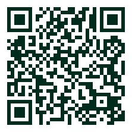

Wild California
About this project
Wild California is a free flashcard tool for learning to recognise the plants and animals that live here. Every card carries a photograph, its common and scientific names, its place in the tree of life, and its conservation status.
Species are drawn from open biodiversity data. Every photograph is openly licensed and credited to the person who took it.
About me
I'm Nichole — an environmental scientist and data analyst interested in using data to better understand and protect the natural world. I built this because learning to name what you see is the first step to caring about it.
Support this project
Your support funds environmental education and a closer appreciation of California's wildlife. It lets me add more species, build new features, and keep improving the site.
